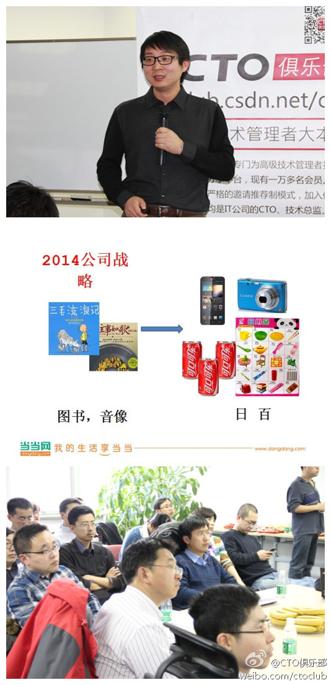

知道 《向前一步》这本书很久了，但昨天才买下来，花两个晚上读完。很多感同身受的地方，比如压抑自己公开讨论性别平等话题；对别人称赞的女性特征很不自在，觉得有贬低自己专业能力嫌疑；女性对女性的歧视有时更严重…… 而有影响力的人，把这些... 网页链接
//@玄了个澄的:有些事只适合要求自己，拿自己都不一定做得到的事要求别人，只能说明自己能力不够求诸于外，而且基本上会失望#说给自己的#@Ada李力:微信上好几个人转这句话，我也几次想点赞来着。忽然发现自己自作多情了，我以为是很多人的自勉。但如果意识到，这是老板对员工的期望时，这句话的意思就全变了。
回复@Eric雪菲:有爱情的婚姻，当然更稳固。这种环境下的孩子，生理心理都更健康。 //@Eric雪菲:产品经理和研发之间是没有爱情的婚姻关系吗？@Ada李力:当当网无线产品总监 李建在《精益产品设计与实践》的分享中，用一张家庭关系图说明与产品相关角色间的关系：产品是孩子的话，产品经理是爸爸，研发是妈妈，老板是爷爷，竞争对手是别人家的孩子…… @CTO俱乐部
包括这次分享的slide, 李建也是用精益思想完成的。@CTO俱乐部:#CTO俱乐部走进当当网#活动现场，当当网技术部无线产品总监李建带来主题为“精益产品设计与实践”的演讲。谈到开发环节，李建认为虽然有时候很多的需求都属于必须做的，但一定要找出什么是核心功能，先开发核心功能再进行验证，因为有些需求其实只算子需求，要用精益的思路去开发。@当当网 @Ada李力
当当网算法研究员 鞠奇 是去年四月份毕业的博士生。加盟当当后不久，就通过提高书评的显示质量，而使书籍销售提高了一个亿，从而获得了总裁奖。技术是生产力的绝佳例子。他分享的话题是《营销技术经验点滴谈》@CTO俱乐部
研究算法的博士毕业后选择当当网，跟技术副总裁付强和CTO熊长青的关系最大。人才是公司最高技术决策人直接邀请游说来的。@CTO俱乐部:#CTO俱乐部走进当当网#当当网算法研究员鞠奇在《营销技术经验点滴谈》的主题演讲中谈及有关书籍推荐和图书评论的算法实现，怎样做到筛选用户感兴趣的、对其有决策影响的评论并置于优先位置。由图书音像向百货发展是当当网2014年目标，鞠奇还谈到这方面相似品牌的挖掘与应用。 
回复@林中路边:帮你问了鞠奇。通过单品页的灰度测试，一半是经过算法调整的，一半采用原有页面。 //@林中路边:怎么衡量出算法改进提高一个亿销量的?@Ada李力:当当网算法研究员 鞠奇 是去年四月份毕业的博士生。加盟当当后不久，就通过提高书评的显示质量，而使书籍销售提高了一个亿，从而获得了总裁奖。技术是生产力的绝佳例子。他分享的话题是《营销技术经验点滴谈》@CTO俱乐部
这条微博转发量这么大，把鞠奇@Qi_ju02 夫人都找出来了。 -->//@sofia_xxf:老公最棒！@Ada李力:当当网算法研究员 鞠奇 是去年四月份毕业的博士生。加盟当当后不久，就通过提高书评的显示质量，而使书籍销售提高了一个亿，从而获得了总裁奖。技术是生产力的绝佳例子。他分享的话题是《营销技术经验点滴谈》@CTO俱乐部
国内第一届Spark大会。@Andrew-Xia:经过不懈地努力，Spark 2014中国技术大会将于4月19号在北京国家会议中心举行，感兴趣的要及时关注了，演讲嘉宾及有Databricks核心成员，也有Spark社区的贡献者，还有互联网公司的一线操盘手，精彩不能错过。网页链接 @刘江总编 @吴甘沙 @hashjoin
 网页链接
网页链接